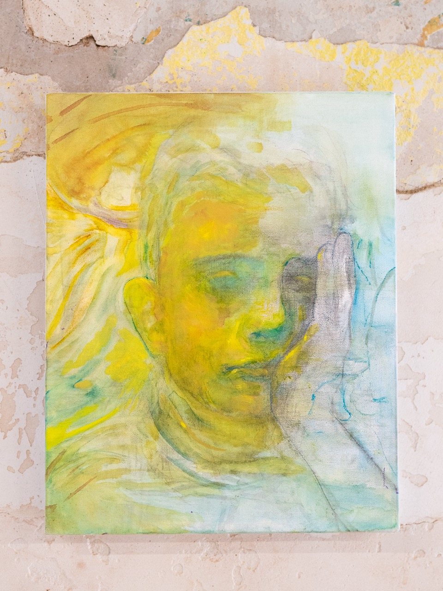

Davide Ciaramella



Davide Ciaramella is a contemporary artist based in Milan. His research explores reality through a personal pictorial language, combining observation, memory, and intuition to reinterpret the human condition and organic concepts. Throughout his career, he has developed international collaborations as a concept designer and photographer. His work has been featured in exhibitions including ORG/ANIMO at Iperspazio (Milan, 2023), Denial is a Privilege at Perimetro Fluido Gallery (Milan), and Unknown Figures at Salvatore Serio Gallery (Naples). He also participated in the international project Imago Mundi for Luciano Benetton at the MADRE Museum in Naples, and in exhibitions at spaces such as Dadun Gallery (Taichung, Taiwan) and Zona Blu (Milan).